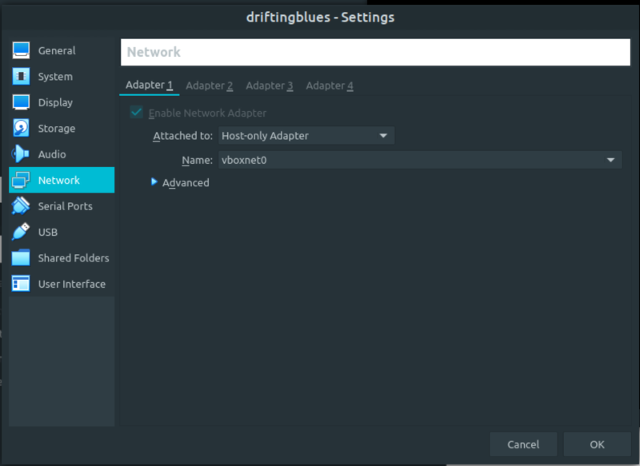

DriftingBlues 7
▸ DriftingBlues 7
▸ 1. Scan Network
▸ 2. Finding Services and Ports
▸ 3. Enumerate
▸ 3.1 Dirsearch
▸ 3.2 Pipe a base64 file
▸ 3.3 Crack zip file
▸ 4. Exploitation
▸ 4.1 Log in EyesOfNetwork
▸ 5. Privilege Escalation
▸ 5.1 Exploit (First flag)
Difficulty: Easy.
Flag: 1 flag.
Learning:
• Reconnaissance
Scan Network
Find services
• Enumerate
Dirsearch
Pipe a base64 file
Crack a zip file
• Exploitation
Log in Eyes of Network
• Privilege Escalation
Exploit with RCE
• Download (Mirror): https://download.vulnhub.com/driftingblues/driftingblues7_vh.ova
• Download (Torrent): https://download.vulnhub.com/driftingblues/driftingblues7_vh.ova.torrent
Install the machine on VirtualBox:
1. Download the file.
2. On Virtualbox choose File->Import Appliance.
3. Select the file “ova”.
4. Accept to import.


Watch your Machine IP.
$ ifconfig
Output:

Diagram